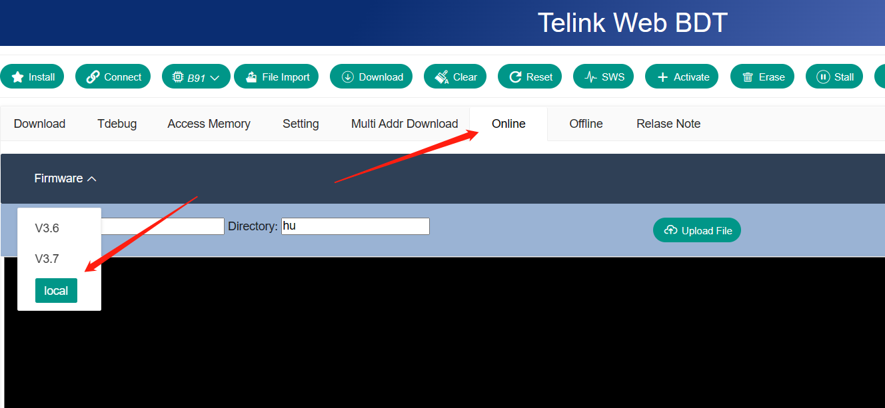

Mini_Buring_EVK
离线下载器介绍¶
Mini_Burning_EVK
Mini_Burning_EVK 是一款专为泰凌芯片提供调试下载功能的下载器，当前版本为v1.1。可配合 BDT 或者 Web BDT 工具使用。 与普通Burning EVK在功能上有两点最明显的不同：其可支持离线下载功能且不支持OTP烧录。
模块板照片：
下载板左侧为USB Type-C接口，通过USB线与电脑连接。左上角为FLASH复位按键，右侧为连接目标板的下载接口：GND、SWM、3V3。下方分别为一键下载按钮、模式选择按钮、 菜单操作拨轮按键。
拨轮按键的左右方向键为菜单选择功能，屏幕的第一行显示工作模式（Win BDT模式/Web BDT模式）和版本号以及在激活目标芯片的时候是否选择擦除FLASH前4K（是则显示Erase，不是则显示N_Erase），当菜单选择这一行时按下拨轮的中间按键可复位目标芯片并选择激活目标芯片的时候是否擦除FLASH的前4K。第二行显示激活状态，按下拨轮的中间按键可激活目标芯片，激活成功会显示OK。第三行显示下载bin的文件名，按下拨轮的中间按键可循环切换文件。第四行显示下载状态，按下拨轮的中间按键可对目标芯片下载对应的bin文件。
离线下载功能使用步骤
本文档介绍使用Web BDT和Mini_Burning_EVK实现离线下载功能，其他功能的使用说明可参考BDT文档和Web BDT文档。
1、更新V3.7及更高版本的固件：Web BDT在Online选项卡处，BDT在Help->Upgrade处。正确更新后会有对应的提示，更新成功后需要插拔USB线重连设备。


2、参考web_bdt文档，准备好环境。
3、打开Web BDT，点击connect成功连接上设备并打开offline选项卡
-
点击Add按钮添加bin文件，可根据实际情况修改bin文件的目标芯片和固件类型以及固件名称(不超过十个字符)。
-
点击Delete按钮可删除待下载列表中最后添加的bin文件。
-
点击Download可以将所选中的文件下载到Mini_Burning_EVK对应的FLASH处，等待下载成功的提示。
4、给Mini_Burning_EVK重新上电，根据屏幕提示，结合按键使用即可进行离线下载等操作。